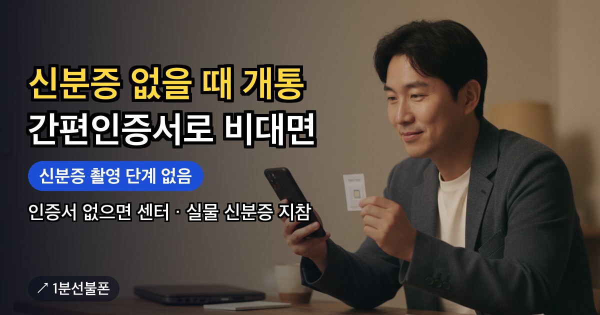
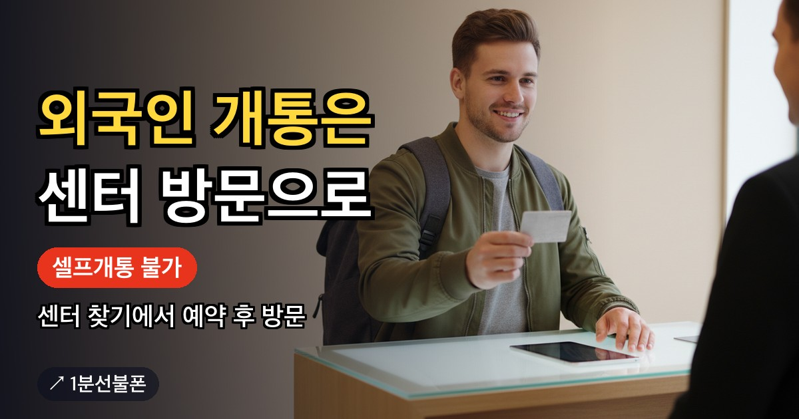

신분증이 지금 손에 없어도 본인 명의 간편인증서가 있으면 앤텔레콤 선불폰은 비대면(웹·앱)으로 개통할 수 있습니다. 비대면 개통에는 신분증을 촬영하거나 올리는 단계가 없고, 간편인증서로 하는 본인인증과 안면인증으로 진행하기 때문입니다. 간편인증서가 없다면 센터 방문 개통으로 가야 하고, 센터에는 실물 신분증을 가져가야 합니다. 내 상황이 어느 쪽인지, 신분증 대신 무엇을 준비하는지 순서대로 정리했습니다.
- 비대면(웹·앱) 개통은 신분증 촬영·업로드 단계가 없고, 본인 명의 간편인증서와 안면인증으로 진행
- 간편인증서는 웹이 토스·카카오 등, 앱이 네이버·토스·카카오 등
- 2026년 10월부터는 안면인증을 반드시 통과해야 개통 가능
- 간편인증서가 없으면 센터 방문 개통, 센터에는 실물 신분증 지참
- 유심은 편의점에서 6,600~8,800원, 없으면 신청 페이지에서 택배·퀵 배송
- 웹 개통 뒤에는 그날 안에 오는 본사 확인 전화(해피콜)를 받아야 함
신분증 없이 되는 방식과 신분증이 꼭 있어야 하는 방식
앤텔레콤 선불폰을 개통하는 길은 웹, 앱, 센터 방문 세 가지입니다. 이 가운데 신분증 실물이 필요한 것은 센터 방문뿐입니다. 웹과 앱은 본인 명의 간편인증서로 본인인증을 하고 안면인증을 거치는 방식이라, 신분증을 찍어서 올리는 단계가 없습니다.
| 개통 방식 | 신분증 | 대신 필요한 것 |
|---|---|---|
| 웹 개통(앤플랫폼) | 촬영·업로드 단계 없음 | 본인 명의 간편인증서(토스·카카오 등), 안면인증, 유심 |
| 앱 개통(앤스마트) | 촬영·업로드 단계 없음 | 본인 명의 간편인증서(네이버·토스·카카오 등), 안면인증, 회원번호 입력, 카카오톡 채널 승인요청 |
| 센터 방문 개통 | 실물 신분증 지참 | 방문 예약 |
그래서 신분증이 없을 때 먼저 확인할 것은 신분증이 아니라 내 명의로 된 간편인증서가 휴대폰에 있는가입니다. 있으면 비대면으로, 없으면 센터 방문으로 갈립니다. 방식별 준비물은 개통 방법 안내에도 정리돼 있습니다.
신분증 대신 챙길 세 가지 — 간편인증서·안면인증·유심
- 본인 명의 간편인증서 — 웹 개통은 토스·카카오 등, 앱 개통은 네이버·토스·카카오 등을 씁니다. 가족이나 다른 사람 명의의 인증서로는 진행할 수 없고, 개통하려는 본인 명의여야 합니다.
- 안면인증 — 웹과 앱 모두 거칩니다. 2026년 10월부터는 안면인증을 반드시 통과해야 개통할 수 있습니다. 형광등 빛이 얼굴이나 화면에 반사되지 않는 자리에서 진행하고, 고개를 돌리라는 안내가 나오면 시선도 고개와 함께 돌리세요. 더 자세한 요령은 개통 안면인증 글에 있습니다.
- 유심 — KT망은 민트색 포장의 바로유심으로 CU·GS25·이마트24에서, LG U+망은 검은색 포장의 모두의원칩으로 이마트24·B마트·지하철 역 자판기에서 삽니다. LG U+망 유심은 CU·GS25에 없습니다. 편의점 유심은 6,600~8,800원이고, 유심이 없으면 신청 페이지에서 택배나 퀵 배송으로 받을 수 있습니다.
다른 통신사에서 쓰던 유심은 앤텔레콤에서 다시 쓸 수 없으니 새로 준비해야 합니다. 사기 전에 볼 것은 유심 준비 안내에서 확인하세요.
신분증을 꺼낼 일 없는 웹 개통, 진행 순서
간편인증서와 유심이 준비됐다면 웹 개통은 아래 순서로 진행합니다. 유심이 있으면 5분이면 끝납니다.
- 가입 유형 고르기 — 새 번호를 받는 신규가입은 08:00~21:50, 쓰던 번호를 옮기는 번호이동은 10:00~19:50에 할 수 있습니다. 번호이동은 일요일·신정·설·추석 당일에는 되지 않습니다.
- 안면인증과 본인인증 — 본인 명의 간편인증서로 인증합니다. 신분증을 촬영하거나 올리라는 단계는 없습니다.
- 유심 정보 입력과 요금제 선택 — 가지고 있는 유심의 정보를 넣고 요금제를 고릅니다. 요금제는 월 12,100원부터 있고 요금제 비교에서 미리 볼 수 있습니다.
- 개통하기 누르기 — 웹 개통은 별도의 승인요청 없이 개통이 완료됩니다.
- 확인 전화 받기와 충전 — 그날 안에 본사 확인 전화(해피콜)가 옵니다(공휴일 제외). 받지 못하면 번호가 해지될 수 있습니다. 충전도 개통한 날 안에 마쳐야 합니다.
앱(앤스마트)으로 진행한다면 태블릿소유자 회원번호 칸에 2772872를 입력하고, 개통신청을 누른 뒤 1분선불폰 카카오톡 채널로 승인요청까지 해야 개통이 완료됩니다. 화면별 설명은 선불폰 셀프개통 글에 있습니다.
간편인증서까지 없다면 센터로, 그때는 신분증을 챙겨야 합니다
본인 명의 간편인증서가 없으면 비대면 개통은 할 수 없고 센터 방문 개통으로 가야 합니다. 센터의 준비물은 실물 신분증입니다. 신분증도 간편인증서도 지금 없다면, 둘 중 하나를 먼저 갖춘 뒤에 개통을 진행하게 됩니다.
- 센터 찾기에서 가까운 센터를 확인하고 예약을 신청합니다. 센터 정보를 본 것만으로는 예약이 확정되지 않습니다.
- 예약이 확인되면 정확한 주소와 방문 시간을 카카오톡으로 안내받습니다.
- 약속한 시간에 실물 신분증을 들고 방문합니다. 센터에서도 안면인증을 하며, 개통 뒤 충전까지 도와줍니다.
간편인증서가 있어도 센터로 가야 하는 경우가 있습니다. 미성년자, 법인, 다른 통신사 번호이동·신규가입·명의변경 후 3개월 이내 회선, 앤텔레콤 번호를 해지한 지 30일 이내인 경우는 셀프개통 대상이 아닙니다. 외국인은 앤플랫폼(비대면)에서 여권으로 개통할 수 없어 센터 방문 개통으로 안내합니다. 대상별로 서류가 더 필요할 수 있으니 예약할 때 함께 확인하세요. 예약 단계는 선불폰 방문 개통 글에, 가입 자격은 선불폰 개통 조건 글에 정리돼 있습니다.
내 상황별로 어디로 가면 되는지 한 표로
| 지금 상황 | 갈 길 | 먼저 할 일 |
|---|---|---|
| 신분증 없음, 간편인증서 있음, 유심 있음 | 웹·앱 비대면 개통 | 가능 시간 안에 신청 시작 |
| 신분증 없음, 간편인증서 있음, 유심 없음 | 웹·앱 비대면 개통 | 편의점에서 유심 구매 또는 신청 페이지에서 택배·퀵 배송 |
| 신분증 없음, 간편인증서 없음 | 센터 방문 개통 | 실물 신분증을 갖춘 뒤 방문 예약 |
| 신분증 있음, 간편인증서 없음 | 센터 방문 개통 | 센터 예약 신청 |
드는 돈은 어느 길이든 유심값과 월 요금제입니다. 편의점 유심이 6,600~8,800원, 요금제가 12,100원부터이고 가입비는 없습니다. 미납·연체·신용불량이어도 본인 명의로 개통할 수 있으며 신용조회 없이 진행합니다.
한 가지 덧붙이면, 1분선불폰 사이트는 신분증 사진, 주민등록번호, 인증번호를 받지 않습니다. 본인인증은 이동한 신청 페이지의 화면 안내에 따라서만 진행하세요.
자주 묻는 질문
신분증을 집에 두고 나왔는데 지금 핸드폰 개통할 수 있나요?
본인 명의 간편인증서가 휴대폰에 있으면 할 수 있습니다. 웹·앱 개통은 신분증을 촬영하거나 올리는 단계 없이 간편인증서 본인인증과 안면인증으로 진행합니다. 유심이 있으면 5분이면 끝납니다.
비대면 개통할 때 신분증 사진을 찍어서 올려야 하나요?
아니요, 비대면 개통에는 신분증 촬영·업로드 단계가 없습니다. 웹은 토스·카카오 등, 앱은 네이버·토스·카카오 등 본인 명의 간편인증서로 인증하고, 안면인증을 통과해야 합니다.
신분증도 없고 간편인증서도 없으면 어떻게 되나요?
간편인증서가 없으면 센터 방문 개통으로 가야 하고, 센터에는 실물 신분증이 필요합니다. 그래서 본인 명의 간편인증서를 갖추거나 실물 신분증을 갖춘 뒤에 개통을 진행하게 됩니다.
센터에 신분증 사진이나 사본만 가져가도 되나요?
센터 방문 개통의 준비물은 실물 신분증으로 안내하고 있습니다. 사진이나 사본으로 되는지는 안내된 내용이 없으니, 예약할 때 센터에 미리 확인하세요.
미납이 있는데 신분증까지 없으면 개통이 안 되나요?
선불폰은 미납·연체·신용불량이어도 본인 명의로 개통할 수 있고 신용조회 없이 진행합니다. 신분증이 없어도 본인 명의 간편인증서가 있으면 비대면으로 개통할 수 있습니다. 다만 앤텔레콤에 미납이 남아 있으면 개통할 수 없습니다.
같이 보면 좋은 글

일요일 핸드폰 개통 — 새 번호는 21:50까지, 쓰던 번호는 다음 날 10:00부터
일요일이라도 새 번호를 받는 신규가입이라면 앤텔레콤 선불 셀프개통은 08:00~21:50 사이에 할 수…

미성년자 선불폰 개통 — 셀프개통은 안 되고 보호자가 센터에서 접수합니다
자녀 이름으로 선불폰을 만들어 주려는 보호자가 먼저 알아야 할 것은 개통 방식입니다. 앤텔레콤 안내에서…

외국인 선불폰 개통 — 센터 방문으로 진행하는 순서와 준비할 것
외국인이 선불폰을 개통할 때 가장 먼저 확인할 것은 방식입니다. 앤텔레콤 안내에서 외국인(여권)은 셀프개통…

핸드폰 미납 정지, 폰이 끊겼을 때 지금 쓸 번호 만들기
핸드폰 요금을 오래 밀리면 이용정지를 거쳐 직권해지로 이어질 수 있습니다. 해제까지는 시간이 걸리는데, 그…
최종 업데이트: